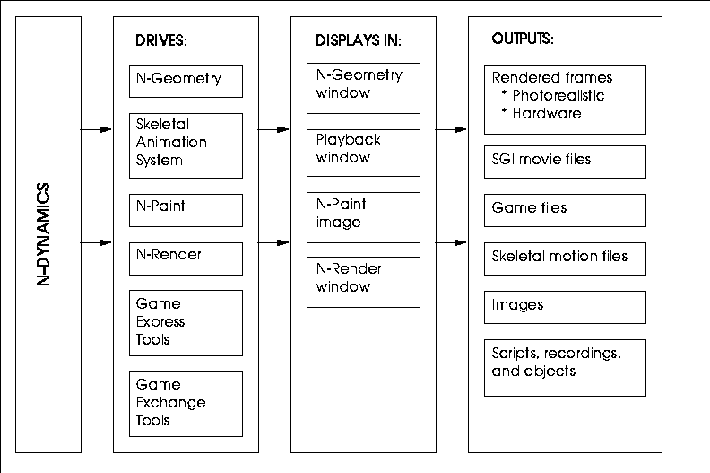

In this chapter, we review how N-Dynamics works with the other applications in N·World.
By itself, N-Dynamics does very little. However, because it's so fully integrated with other products in N·World, it is a powerful animation choreographer, which can generate an almost endless variety of animation.
How N-Dynamics Works
Figure 1.1 shows the basic relationship between N-Dynamics and the rest of the N·World:

Working with 3D Objects
N-Dynamics lets you rotate, scale, or otherwise transform objects in three dimensions. Controlling the position of the objects is flexible; you can place objects at their intended location in the scene by manipulating them with the mouse, or specify changes by typing in a numeric value for their position, distance, rotation, or whatever other units define the operation you are controlling.
For 3D objects, you can specify a variety of geometric operations (such as Move, Rotate, or Scale).
Working with 2D Elements
N-Dynamics contains a wide variety of operations that can be used to animate N-Paint effects. You can use N-Dynamics to load in an entire series of images, perform an operation on each image (such as a Blur or Scatter), then save out those images.
Working with Materials and Lights
Attributes for both materials and lights can be animated over time in N-Dynamics. This means you can animate the rendering attributes for your object during the animation (letting a tiger change the color of his spots) or the lighting effects (so you can easily simulate sunset).
Working with Skeletons
An entire class of operations is devoted to animating skeletons and working with motion capture data. These operations are described in detail in the Skeletal Animation System Reference Guide.
Game Tools
Nichimen exports data to both standard game formats and, when using the Nichimen Game Exchange product, to generic Game Exchange Format files. These generic files can then be converted (using supplied libraries) to different platform specific formats-meaning you need write out your data only once, then simply convert it for use on different machines.
Copyright © 1996, Nichimen Graphics Corporation. All rights reserved.